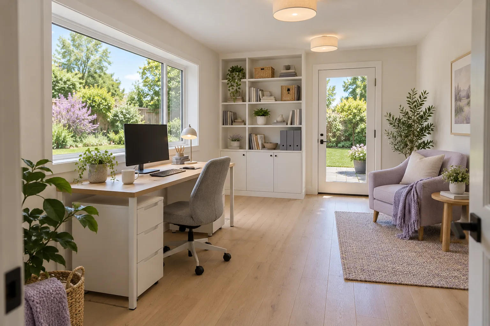
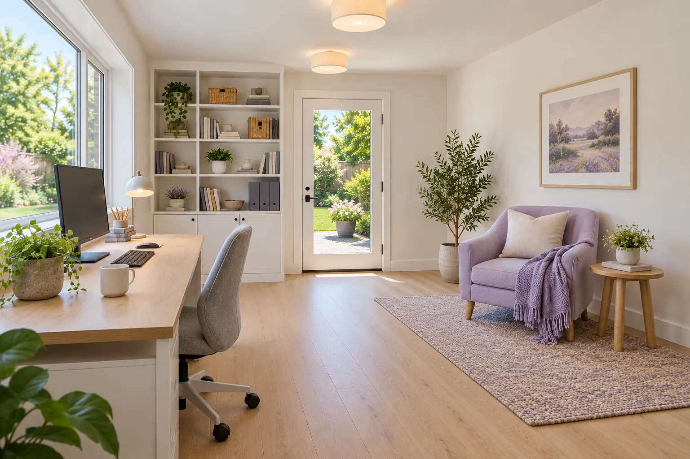

Garage conversion
Garage Office Conversion in Holly Springs
A two-car garage turned into a quiet home office with a door to the garden.

About the project
Why they needed the space
Working from the dining table wasn’t working, and the garage was full of boxes.
How we built it
We checked the slab for moisture, raised and insulated the floor, insulated the walls and ceiling, added a big window and a glass door to the garden, and put in a ductless heat pump.
This is an illustrative project story for a customizable contractor template.
← Back to all projectsWhat the family said
“My mother has her own space and we still eat dinner together every night. It’s exactly what we hoped for.”Illustrative client review